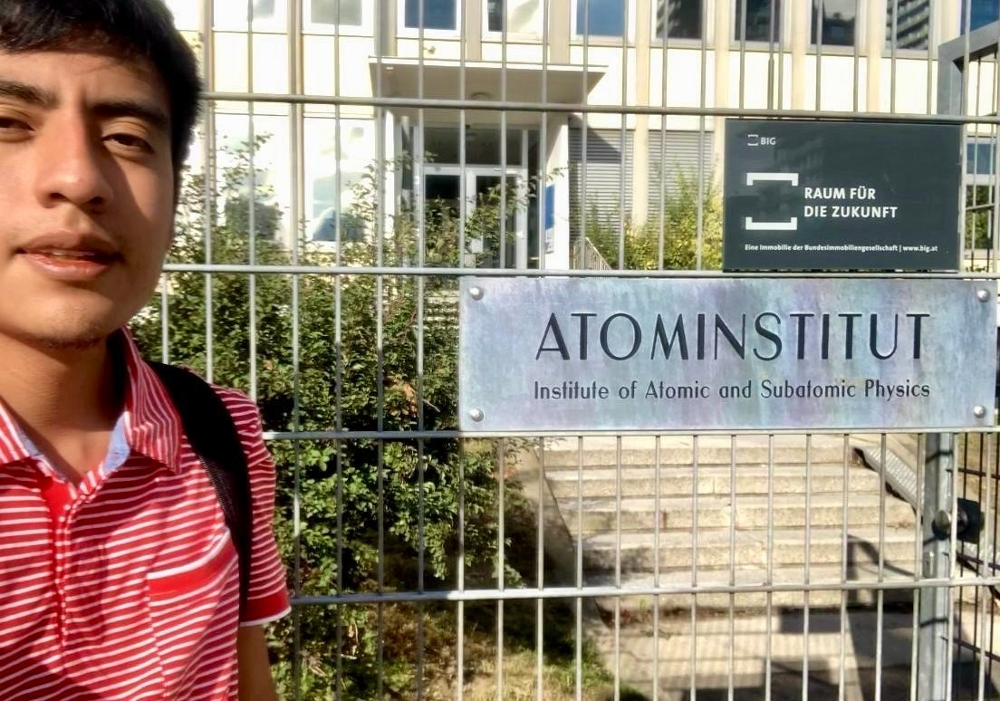
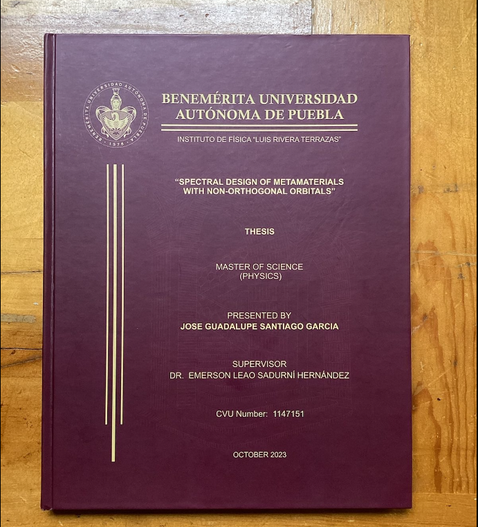
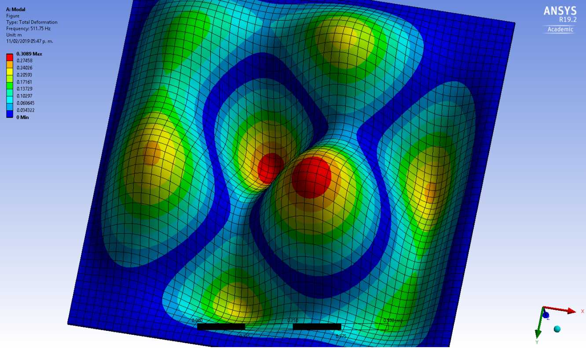

Simplicity is the ultimate sophistication — Leonardo da Vinci?
About
I obtained my MSc (Physics) degree with academic distinction at the Instituto de Física, Benemérita Universidad Autónoma de Puebla (IFUAP), a research center located in Puebla, México, which has ranked first in physics at national level. Previously, I completed my BSc (Applied physics) studies at the Universidad Tecnológica de la Mixteca, in Oaxaca, México.
Education
MSc (Physics) - Degree obtained with academic distinction
2021 - 2023
Benemérita Universidad Autónoma de Puebla, Puebla, MX
Thesis (in English): Spectral design of metamaterials with non-orthogonal orbitals - Link
BSc (Applied Physics)
2015 - 2020
Universidad Tecnológica de la Mixteca, Oaxaca, MX
Thesis (in Spanish): Algebraic methods in the computation of crystalline propagators, with applications to photonic crystals - Link
With both my Bachelor's and Master's dissertations focusing on topics within the realm of mathematical physics, I'm confident to have a strong training in the theoretical description of quantum systems.
Research experience
I knew I wanted to devote myself to learn about quantum mechanics since my early years as a bachelor's student. This have led me to perform several internships and develop personal projects which have allowed me to gain experience in a variety of topics such as experimental quantum optics, numerical solutions of Schrödinger's equation, propagation of waves in artificial crystals, quantum optimal control for superconducting qubits, and spectral design of compact materials by geometrical deformations. I have had the opportunity to work in diverse teams such as: the Quantum Optics Group at the Universidad Nacional Autónoma de México (UNAM), the New Physics in Accelerators and the Cosmos group at IFUAP, and the Quantum Information and Thermodynamics (QuIT) group at Atominstitut, TU Wien.
Intern, Marcus Huber's group
Supervisor: Dr. Phila Rembold
Summer 2023
Atominstitut, TU Wien, Vienna, AT
MSc research project
(Mathematical physics)
Supervisor: Dr. E. Sadurní
2022 - 2023
Instituto de Física, BUAP, Puebla, Mx
BSc research project
(Mathematical physics)
Supervisor: Dr. E. Sadurní
Summer 2019
Instituto de Física, BUAP, Puebla, Mx
Undergraduate research project
Winter 2018
Instituto de Física y Matemáticas, UTM, Oaxaca, Mx
Research stay
Supervisor: Dr. Víctor Manuel Velázquez Aguilar
Summer 2018
Quantum Optics Group, UNAM, México, Mx
Areas of knowledge
I have gained experience and produced original results in the following areas during my research projects and internships:
- Numerical methods for quantum mechanics
- Quantum optics: photon statistics
- Crystalline propagators for 1D and 2D lattices
- Artificial crystals
- Tight-binding models
- Emulation of quantum dynamical effects
- Wannier functions
- Spectral design for potential well structures
- Transport properties by the method of continued fractions
- Transmon qubits and their control
- All
- Quantum optics
- The finite element method for QM
- Photonic crystals
- SU(2) propagator
- SU(1,1) lattice
- Heisenberg chain
- Crystalline propagators in 1D
- SO(4) crystal
- SU(3) lattice
- Spectral emulations
- Asymmetric bands with non-orthogonal orbitals
- Wannier functions
- Spectral rectification
- Equispaced spectrum
- Electronic oscillator
- Resonance spectra
- Tight-binding models


.png)
 square lattice.png)
.png)


I dream of joining the Theory Division of the Max Planck Institute for the Science of Light (MPL) and I am working hard to make it real.
Having worked under the supervision of Dr. E. Sadurni, a direct academic descendent of renowned scientists such as M. Polanyi, E. Wigner and M. Moshinsky, gives me hope of meeting the high academic standards of MPL. I'm looking forward to join forces and would be very honoured to be part of the team.
Schools
I have attended the following schools:


{kind=link}
{kind=link}
{kind=link}
{kind=link}
{kind=link}
{kind=link}
{kind=link}
{kind=link}
{kind=link}
{kind=link}
{kind=link}
{kind=link}
{kind=link}
... the secret to my success has been due to self-control and willpower. Control yourselves, be your own masters, and at the same time develop determination. If you undertake anything, determine to accomplish your purpose and let no obstacle, no matter what, turn you back — Roald Amundsen